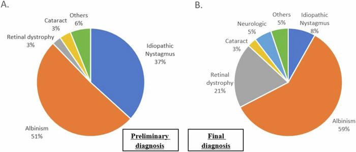
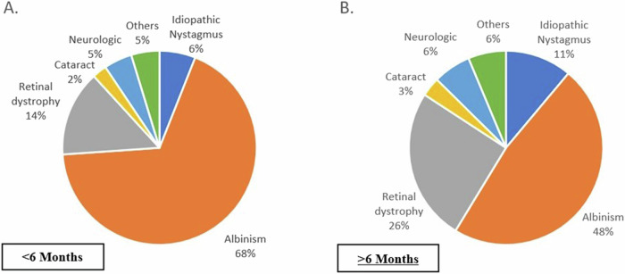
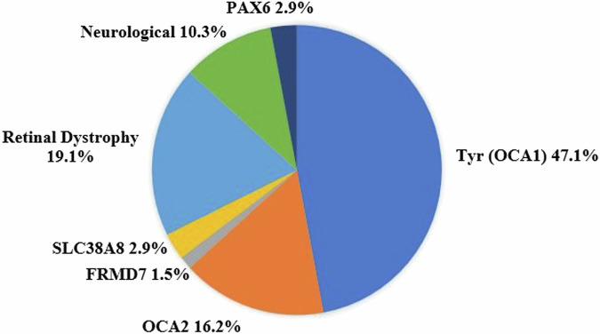
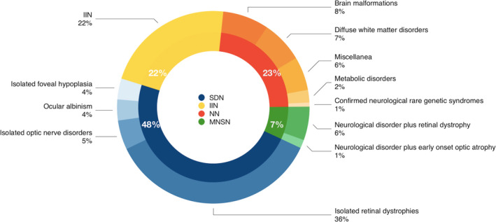
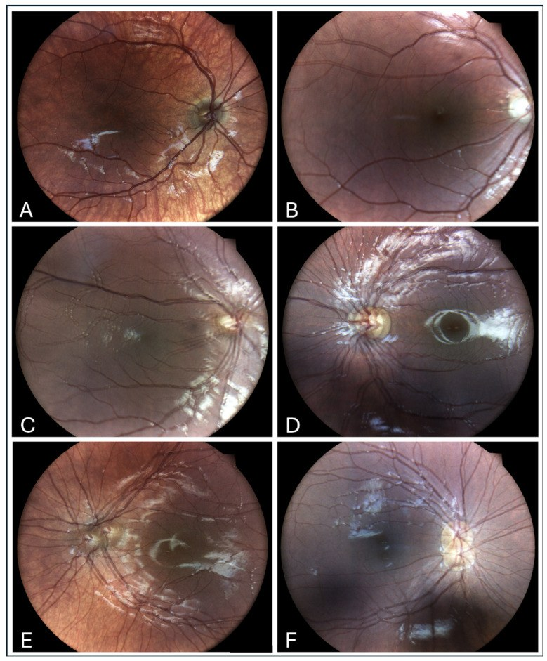
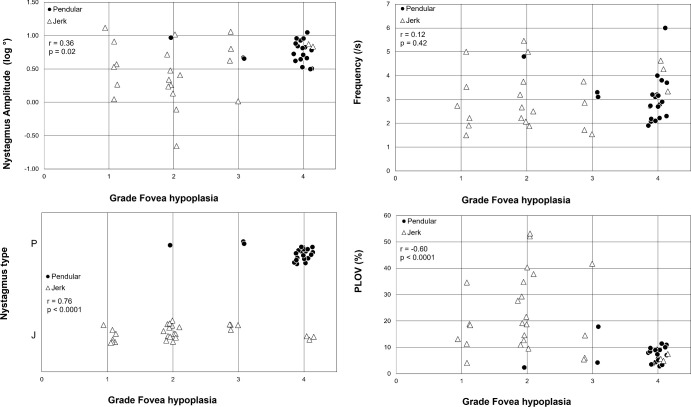

471 — Rung giật nhãn cầu ở trẻ nhũ nhi & trẻ sinh non: phân biệt thể cảm giác – vô căn – thần kinh / Infantile & sensory nystagmus in infants and preterm children
Tags: pattern:rung-giat-nhan-cau pattern:giam-thi-luc vung:mat vung:nao protocol:ERG-VEP protocol:OCT-hoang-diem protocol:MRI-nao
Mức chắc chắn (certainty): tổng hợp y văn (literature synthesis) — tự biên từ 4 nghiên cứu đoàn hệ mở (Eye 2025 CC BY; Dev Med Child Neurol 2022 CC BY; Children 2025 CC BY; IOVS 2023 CC BY-NC-ND) + 2 bài tổng quan mở (Clin Ophthalmol 2025 CC BY-NC; Front Neurosci 2025 CC BY), chưa gắn một ca nguyên văn đơn lẻ.
1. Tổng quan — vì sao mắt "rung" lại làm mất thị lực, và ngưỡng nào buộc phải tầm soát bệnh nền
- Định nghĩa (definition): rung giật nhãn cầu (nystagmus) là dao động không tự chủ, có nhịp, hai pha (pha chậm đưa mắt ra khỏi đích + pha nhanh đưa về, hoặc dao động đều kiểu lắc). Rung giật nhãn cầu nhũ nhi (infantile nystagmus syndrome — INS) khởi phát trước 6 tháng tuổi; khởi phát sau 6 tháng được xếp là mắc phải (acquired) và có trọng số bệnh lý thần kinh cao hơn.
- Dịch tễ (epidemiology): rung giật nhãn cầu ở trẻ 6,1 – 14/10.000 trẻ sinh sống; tăng rõ ở trẻ sinh non, đặc biệt nhóm đã điều trị bệnh võng mạc sinh non (ROP) — trong đoàn hệ Gutenberg, rung giật gặp 26,7% ở nhóm ROP phải điều trị so với 0,7% ở trẻ ≥ 37 tuần (Fieß A, Br J Ophthalmol 2024, PMC11503079; bài 469).
- TẠI SAO rung giật làm giảm thị lực — cơ chế vật lý: ảnh của vật trượt liên tục trên võng mạc; võng mạc chỉ "nhìn rõ" khi ảnh đứng yên đủ lâu. Thước đo trực tiếp là tỉ lệ thời gian vận tốc mắt thấp (percentage of low velocity — PLOV): PLOV càng thấp, ảnh càng nhoè. Trên 50 bệnh nhân bạch tạng (albinism), kiểu rung giật và PLOV tương quan mạnh nhất với thị lực (r = 0,70 và r = −0,56) và với mức giảm sản hố hoàng điểm (foveal hypoplasia) (r = 0,76 và r = −0,60); mức giảm sản hố hoàng điểm tương quan với thị lực r = 0,87 (Talsma HE, IOVS 2023, PMC10746925). Nói cách khác: rung giật vừa là dấu hiệu của hệ thị giác lỗi, vừa là nguyên nhân cộng thêm làm thị lực kém.
- TẠI SAO phải tìm bệnh nền chứ không được "chốt vô căn" sớm: trong 147 trẻ ≤ 1 tuổi có rung giật, chẩn đoán lúc khám đầu là "vô căn" tới 36,7%, nhưng chẩn đoán cuối cùng chỉ còn 8,2% vô căn; bạch tạng 59,2%, bệnh võng mạc di truyền (inherited retinal disease — IRD) 19,5%, thần kinh 4,7% (Goldman E, Eye 2025, PMC11933425). Việc "đổi nhãn" chủ yếu nhờ khám lâm sàng kỹ + điện sinh lý + xét nghiệm gen.
- Ngưỡng định lượng nằm lòng (Goldman E, PMC11933425; n = 147 trẻ ≤ 1 tuổi):
- Nguyên nhân cuối cùng: bạch tạng 87/147 (59,2%); IRD 28 (19,5%); vô căn 12 (8,2%); đục thể thuỷ tinh 4 (2,7%); khác (aniridia, coloboma…) 9 (6,1%); thần kinh 7 (4,7%) (bệnh não thị giác (CVI) 4, u chèn chỗ 1, Moebius 1, giảm myelin thoáng qua 1).
- Theo tuổi: ở nhóm < 6 tháng, bạch tạng chiếm 57/84 (67,9%); ở nhóm ≥ 6 tháng, IRD tăng lên 26% (Hình 2).
- Đặc điểm kèm: lác 51/147 (34,7%), trong đó lác trong 42/51 (82,4%); viễn thị ≥ +4 D 73/147 (49,6%); cận thị ≤ −4 D 9/147 (6,1%); loạn thị > 2 D 50/147 (34%).
- Dạng sóng: ngang 122/147 (82,9%), dọc 8/147 (5,4%), hỗn hợp 9/147 (6,1%). Trong 8 ca rung giật dọc: 4 ca là IRD (achromatopsia 3, CSNB 1), 2 aniridia, 1 đục thể thuỷ tinh, 1 vô căn — rung giật dọc KHÔNG đồng nghĩa với u não, nhưng buộc phải loại trừ cả bệnh võng mạc lẫn thần kinh.
- Hiệu suất xét nghiệm: MRI được làm ở 29/147 (19,7%) nhưng chỉ 6/29 ca tìm ra nguyên nhân thần kinh; gen là xét nghiệm "chốt" ở 66/147 (44,9%), khám lâm sàng ở 60/147 (40,8%) (trong đó 43/60 = 72% là chẩn đoán bạch tạng), ERG 16/147 (10,9%).
- Nhóm "mắt bình thường nhưng vẫn rung" (Suppiej A, Dev Med Child Neurol 2022, PMC9796881; n = 142 trẻ khởi phát < 6 tháng, khám mắt không kết luận): khiếm khuyết cảm giác (sensory defect) 48%, thần kinh 23%, phối hợp thần kinh + cảm giác 7%, INS vô căn 22%. Tổng hợp lại, 30% trẻ "không thấy bất thường ở mắt" có nguyên nhân thần kinh — nên điện sinh lý (electrophysiology) phải làm sớm, không chờ MRI.

Trái (A): lúc khám đầu — "vô căn" 37%, bạch tạng 51%. Phải (B): sau chẩn đoán — bạch tạng 59%, bệnh võng mạc di truyền 21%, vô căn chỉ còn 8%, thần kinh 5%. Nguồn: Goldman E et al., Eye 2025, PMC11933425 Fig. 1, CC BY 4.0.
Nhóm < 6 tháng: bạch tạng 68%, IRD 14%, thần kinh 5%. Nhóm ≥ 6 tháng: bạch tạng 48%, IRD 26%, thần kinh 6%, vô căn 11%. Nguồn: Goldman E et al., Eye 2025, PMC11933425 Fig. 2, CC BY 4.0.
Tyr (OCA1) 47,1%, OCA2 16,2%, bệnh võng mạc di truyền 19,1%, nhóm thần kinh 10,3%, PAX6 2,9%, SLC38A8 2,9%, FRMD7 1,5%. Nguồn: Goldman E et al., Eye 2025, PMC11933425 Fig. 4, CC BY 4.0.2. Mẫu hình + chẩn đoán phân biệt theo cơ chế (gamut)
- Cách phân nhóm thực dụng: hỏi 2 câu trước mọi xét nghiệm — (1) khởi phát trước hay sau 6 tháng? (2) khám mắt có thấy bất thường không? Từ đó chia 4 nhánh:
- INS có bệnh nền mắt rõ (sensory nystagmus): bạch tạng (albinism), bệnh võng mạc di truyền (achromatopsia, CSNB, LCA), giảm sản thần kinh thị (optic nerve hypoplasia), đục thể thuỷ tinh/giác mạc, teo hắc võng mạc. Chiếm 48% nhóm "không thấy bất thường" khi khám chuyên sâu (Suppiej A, PMC9796881).
- INS vô căn (idiopathic infantile nystagmus): khám mắt – OCT – ERG bình thường; nhiều ca có đột biến FRMD7 (di truyền liên kết X) hoặc gen trội khác; chiếm 22% (Suppiej) / 8,2% (Goldman) tuỳ tiêu chuẩn "đã loại trừ đủ chưa".
- Rung giật do thần kinh: dị dạng não, bệnh chất trắng, bệnh chuyển hoá, u chèn chỗ, CVI. Chiếm 23% (Suppiej) và 30% nếu khám mắt không kết luận.
- Rung giật mắc phải "kiểu thần kinh định vị": rung giật see-saw (vùng giao thoa thị – hypothalamic), downbeat/upbeat, convergence-retraction (não giữa lưng), opsoclonus-myoclonus (u nguyên bào thần kinh ở trẻ) — khởi phát sau 6 tháng hoặc có dấu thần kinh kèm.
- Gamut theo tuổi & bối cảnh:
- Sơ sinh – 6 tháng: bạch tạng, IRD bẩm sinh, giảm sản thần kinh thị, đục thể thuỷ tinh bẩm sinh, spasmus nutans (gật đầu + nghiêng đầu, lành tính nhưng phải loại trừ u đường thị–vùng dưới đồi), rung giật do thuốc/mẹ dùng thuốc.
- Trẻ sinh non/ROP: rung giật 26,7% ở nhóm ROP đã điều trị (Fieß A, PMC11503079); thường kèm lác, cận thị, hoàng điểm lệch, bệnh não trắng quanh não thất → phải tách phần "mắt" và phần "não".
- Sau 6 tháng: u hố sau/dị dạng não, bệnh chuyển hoá, ngộ độc, rung giật do mất thị lực mắc phải; luôn hỏi thuốc (phenytoin, carbamazepine, rượu ở mẹ) và chấn thương.
- Mnemonic "6 câu hỏi trước khi gọi vô căn": Onset < 6 tháng? Family history? Albinism (da/tóc/mắt)? Retina (ERG/OCT)? Neurology (dấu thần kinh, đầu to, chậm phát triển)? Genetics (FRMD7/OCA)?

Vòng trong: khiếm khuyết cảm giác (SDN) 48%, vô căn (IIN) 22%, thần kinh (NN) 23%, phối hợp (MNSN) 7%. Vòng ngoài SDN: bệnh võng mạc di truyền đơn thuần 36%, bệnh thần kinh thị 5%, bạch tạng mắt 4%, giảm sản hố hoàng điểm đơn thuần 4%. Nguồn: Suppiej A et al., Dev Med Child Neurol 2022, PMC9796881 Fig. 1, CC BY 4.0.3. Bảng so sánh phân biệt (ma trận đối chiếu)
| Thực thể (entity) | Lâm sàng/hình ảnh điển hình | Chốt vào (rule-in) | Chốt loại (rule-out) | Gợi ý xác nhận |
|---|---|---|---|---|
| Bạch tạng (albinism) | Rung giật ngang, giảm sản hố hoàng điểm, da/tóc nhạt, trong suốt mống mắt | Giảm sản hố hoàng điểm + dấu da/tóc + tiền sử gia đình | Đáy mắt có hố hoàng điểm rõ và sắc tố bình thường → không phải bạch tạng | Khám đèn khe + OCT; gen OCA1/OCA2/GPR143; ERG |
| Bệnh võng mạc di truyền (achromatopsia/CSNB/LCA) | Rung giật + sợ ánh sáng, thị lực kém, đáy mắt có thể bình thường | ERG bất thường (giảm/không đáp ứng) + sợ ánh sáng | ERG bình thường + OCT bình thường → ít nghĩ IRD | ERG/VEP + gen (CNGA3/CNGB3/TRPM1…) |
| INS vô căn (FRMD7) | Rung giật ngang, không sợ ánh sáng, khám mắt – OCT – ERG bình thường, hay có người trong gia đình | Loại trừ đủ bệnh mắt + thần kinh + gen FRMD7 | Còn bất kỳ bất thường ERG/OCT/MRI → không gọi vô căn | Gen FRMD7; theo dõi thị lực |
| Rung giật thần kinh | Khởi phát sau 6 tháng, dọc/hỗn hợp, đầu to, chậm phát triển, dấu thần kinh khu trú | Dấu thần kinh + MRI bất thường | MRI bình thường + ERG bất thường → nghiêng cảm giác | MRI não (29/147 ca, 6/29 tìm ra nguyên nhân) + khám thần kinh |
| Spasmus nutans | Gật đầu + nghiêng đầu + rung giật nhỏ, thường 6–18 tháng, tự hết | Bộ ba gật–nghiêng–rung, không dấu thần kinh | Có dấu thần kinh/dậy thì sớm → phải MRI loại trừ u đường thị | MRI nếu không điển hình; theo dõi |
| Rung giật mắc phải kiểu định vị | See-saw, downbeat, convergence-retraction, opsoclonus | Hình thái đặc hiệu + khởi phát muộn | Rung giật ngang đơn thuần từ nhỏ → INS | MRI não–hốc mắt; tầm soát u (opsoclonus → neuroblastoma) |

(A) không có ảnh đôi; (B) rung giật xoay độ 1; (C–F) các mức ảnh đôi ngang/dọc tăng dần. Chụp đáy mắt vẫn đọc được chi tiết võng mạc dù mắt rung, và giúp định hướng – định lượng biên độ. Nguồn: Cohen-Sinai N et al., Children 2025, PMC11854684 Fig. 2, CC BY 4.0.
Biên độ, tần số và PLOV đều thay đổi có ý nghĩa theo grade giảm sản hố hoàng điểm; grade 4 gần như luôn đi với rung giật kiểu lắc (pendular) 86%. Nguồn: Talsma HE et al., IOVS 2023, PMC10746925 Fig. 6, CC BY-NC-ND 4.0 (giữ nguyên bản).4. Protocol chẩn đoán + hệ phân độ/điểm chuẩn hoá
- Bước 0 — khám mắt đầy đủ (bắt buộc, làm trước mọi hình ảnh): thị lực theo lứa tuổi (Teller/Lea), khúc xạ dưới lý liệt điều tiết (cycloplegic refraction), đèn khe, soi đáy mắt gián tiếp, tìm dấu bạch tạng (trong suốt mống mắt, giảm sắc tố hố hoàng điểm), đục môi trường, lác. Khám lâm sàng một mình đã "chốt" được 40,8% ca, riêng bạch tạng 72% (Goldman E, PMC11933425) — đừng nhảy thẳng vào MRI.
- Bước 1 — đo khúc xạ dưới lý liệt + chỉnh kính: viễn thị ≥ +4 D gặp ở 49,6% trẻ rung giật ≤ 1 tuổi; chỉnh kính đúng là bước đầu của mọi phác đồ.
- Bước 2 — OCT hoàng điểm (handheld nếu trẻ nhỏ): xác định grade giảm sản hố hoàng điểm 0–4 (Leicester grading: 0 = bình thường; 4 = mất phân biệt các lớp trong/ngoài võng mạc). Lưu ý chất lượng ảnh kém khi mắt rung — trong đoàn hệ trên chỉ 15 trẻ làm được OCT (Goldman E, PMC11933425); không loại trừ bệnh võng mạc chỉ vì OCT không đọc được.
- Bước 3 — điện sinh lý (ERG/VEP) sớm: đây là "cửa" phân biệt bệnh võng mạc với vô căn; Suppiej A khuyến nghị đưa điện sinh lý vào sớm, nhất là khi khám mắt không kết luận (PMC9796881). ERG là xét nghiệm chốt ở 10,9% ca trong đoàn hệ Goldman.
- Bước 4 — xét nghiệm gen: panel FRMD7, OCA1 (TYR), OCA2, GPR143, SLC38A8, PAX6, gen bệnh võng mạc (CNGA3, CNGB3, TRPM1, CRB1, GUCY2D, RPE65…). Gen là xét nghiệm chốt nhiều nhất — 44,9% (Goldman E, PMC11933425). Tư vấn di truyền theo kiểu di truyền (FRMD7 liên kết X; OCA lặn; một số thể trội).
- Bước 5 — MRI não: chỉ định khi khởi phát sau 6 tháng, rung giật dọc/hỗn hợp, bất đối xứng, có dấu thần kinh, đầu to, chậm phát triển, spasmus nutans không điển hình, nghi u. MRI được làm ở 19,7% và chỉ 6/29 ca cho nguyên nhân — MRI không thay thế ERG/khám mắt.
- Hệ phân độ dùng trong bài:
- Leicester OCT grading giảm sản hố hoàng điểm 0–4 (0 bình thường → 4 mất phân biệt hoàn toàn) — tương quan với thị lực r = 0,87 (Talsma HE, PMC10746925).
- Phân loại sóng: jerk (pha nhanh rõ) vs pendular (lắc đều); PLOV thấp = thị lực kém hơn. Grade 4 gần như luôn là pendular (86%).
- Điều trị (không có "thuốc chữa rung" đơn thuần):
- Chỉnh khúc xạ tối đa + điều trị nhược thị/lác nếu có (bài 469) — nền tảng.
- Lăng kính (prisms) đưa mắt về điểm trung hoà (null point) khi có tư thế đầu bất thường; kính râm/ám màu cho achromatopsia (sợ ánh sáng).
- Phẫu thuật: chuyển null point (Anderson–Kestenbaum) hoặc làm giảm biên độ (recession/resection, tenotomy). Trong tổng quan hệ thống 52 nghiên cứu điều trị INS, 28/52 là can thiệp phẫu thuật — bằng chứng không đồng nhất, kết quả báo cáo khác nhau (Li X, Front Neurosci 2025, PMC12222088).
- Thuốc: gabapentin/memantine/brinzolamide được dùng cho một số thể (đặc biệt rung giật mắc phải/acquired), hiệu quả và liều ở trẻ còn chưa được chuẩn hoá — chưa rõ, cần tra; không dùng thay cho chỉnh kính/điều trị bệnh nền.
- Huấn luyện tri giác (perceptual training) là hướng mới, hứa hẹn cải thiện thị lực và chất lượng sống nhưng còn ít dữ liệu (Li X, PMC12222088).
flowchart TD
A[Trẻ rung giật nhãn cầu] --> B{Khởi phát trước 6 tháng?}
B -->|Có| C[Khám mắt đầy đủ + khúc xạ lý liệt]
B -->|Không| D[Nghi mắc phải/thần kinh]
C --> E{Khám mắt bất thường?}
E -->|Có| F[Bạch tạng, đục môi trường, teo hắc võng mạc]
E -->|Không| G[OCT hoàng điểm + ERG/VEP]
G --> H{ERG/OCT bất thường?}
H -->|Có| I[Bệnh võng mạc di truyền / giảm sản thần kinh thị]
H -->|Không| J[Xét nghiệm gen FRMD7/OCA]
J --> K{Gen dương tính?}
K -->|Có| L[Chẩn đoán xác định + tư vấn di truyền]
K -->|Không| M[INS vô căn sau loại trừ]
D --> N[MRI não + khám thần kinh]
N --> O{Có tổn thương/dấu thần kinh?}
O -->|Có| P[Xử trí theo nguyên nhân]
O -->|Không| Q[Theo dõi + điện sinh lý định kỳ]
F --> R[Chỉnh kính + điều trị nhược thị/lác]
I --> R
L --> R
M --> R
R --> S[Tư vấn tiên lượng + theo dõi dài hạn]
5. Biến thể bình thường và cạm bẫy
- "Vô căn" là chẩn đoán loại trừ, không phải chẩn đoán đầu tay: tỉ lệ vô căn tụt từ 36,7% → 8,2% sau khi làm đủ xét nghiệm (Goldman E, PMC11933425). Gọi vô căn khi chưa ERG/gen = bỏ sót bệnh võng mạc di truyền.
- MRI bình thường không loại trừ bệnh mắt: MRI chỉ được làm ở 19,7% và hiệu suất thấp (6/29); ERG/OCT/gen mới là trục chính.
- Rung giật dọc không đồng nghĩa u não: 8 ca dọc trong đoàn hệ có 4 IRD, 1 vô căn — nhưng vẫn phải loại trừ thần kinh.
- Rung giật che lấp nhược thị: trẻ rung giật thường không đo được thị lực kiểu bảng thông thường; dùng Teller/Lea + đo lập thể, và nhớ rằng lác 34,7% đi kèm.
- Spasmus nutans "lành tính" là cạm bẫy chết người: bộ ba gật đầu–nghiêng đầu–rung giật nhỏ thường tự hết, nhưng u đường thị/vùng dưới đồi có thể bắt chước; bất đối xứng, dấu thần kinh, khởi phát sớm → MRI.
- Trẻ sinh non: đừng quy tất cả cho ROP: rung giật gặp 26,7% ở nhóm ROP điều trị nhưng còn do bệnh não trắng, khúc xạ cao, lác — khám đa ngành (bài 469, 456).
- Ảnh OCT/đáy mắt bị nhiễu do rung: không đọc sai thành "bình thường"; dùng fundus camera chụp chuỗi (ảnh "bóng ma" giúp định hướng) hoặc máy cầm tay.
- Bỏ sót thuốc/ngộ độc: phenytoin, carbamazepine, lithium, rượu — hỏi kỹ trước khi quy vô căn.
6. Tự lượng giá — Blind Quiz
Ca 1 — Bé 8 tháng, rung giật nhãn cầu từ 3 tháng, khám mắt "không thấy gì", ERG và OCT bình thường.
- Bối cảnh: mắt không đục, đáy mắt khó đọc vì mắt rung.
- Câu hỏi: Hai chẩn đoán nào "biến mất" nhiều nhất sau khi làm đủ xét nghiệm? Trước khi gọi vô căn, cần làm gì?
Bấm để hiện đáp án (findings + chẩn đoán)
- "Vô căn" giảm từ 37% xuống 8%, đồng thời bạch tạng tăng 51% → 59%, bệnh võng mạc di truyền 3% → 21%. Nghĩa là phần lớn ca "không thấy gì" thực ra có bệnh nền khi khám/điện sinh lý/gen kỹ hơn.
- Cần làm: khúc xạ lý liệt, OCT hoàng điểm (tìm giảm sản hố hoàng điểm), ERG/VEP, panel gen (FRMD7/OCA/IRD), khám da–tóc–mống mắt.
- Chẩn đoán: INS vô căn chỉ được đặt sau khi loại trừ bệnh võng mạc, bạch tạng, thần kinh — không dựa vào "khám mắt thấy bình thường".
- Nguồn: Goldman E et al., Eye 2025, PMC11933425 Fig. 1, CC BY 4.0.
Ca 2 — Bé gái 10 tháng, rung giật ngang, sợ ánh sáng, đáy mắt khó đọc; ERG giảm đáp ứng.
- Bối cảnh: mẹ than con "không dám mở mắt ngoài nắng".
- Câu hỏi: Ảnh đáy mắt cho thấy gì? Vì sao ERG quan trọng hơn MRI ở ca này?
Bấm để hiện đáp án (findings + chẩn đoán)
- Findings: ảnh đáy mắt có nhiều "bóng ma" (ghost images) xếp theo hướng rung — dấu hiệu của rung giật biên độ trung bình–lớn; võng mạc vẫn đọc được chi tiết.
- Chẩn đoán: rung giật thể cảm giác do bệnh võng mạc di truyền (achromatopsia/CSNB) — sợ ánh sáng + ERG giảm là chốt. ERG phát hiện bệnh võng mạc trong khi MRI chỉ loại trừ nguyên nhân thần kinh; ở nhóm "mắt bình thường", 48% là khiếm khuyết cảm giác (Suppiej A, PMC9796881).
- Xử trí: chỉnh kính, kính râm/ám màu, tư vấn di truyền, theo dõi thị lực; không chờ MRI để bắt đầu hỗ trợ thị giác.
- Nguồn: Cohen-Sinai N et al., Children 2025, PMC11854684 Fig. 2, CC BY 4.0; Suppiej A et al., Dev Med Child Neurol 2022, PMC9796881 (CC BY 4.0).
Ca 3 — Bé trai 2 tuổi, rung giật + gật đầu + nghiêng đầu; khám thần kinh bình thường.
- Bối cảnh: bố mẹ thấy con "lắc đầu theo nhịp" khi nhìn đồ chơi.
- Câu hỏi: Nghĩ thể nào? Khi nào vẫn phải chụp MRI dù khám thần kinh bình thường?
Bấm để hiện đáp án (findings + chẩn đoán)
- Nghĩ spasmus nutans (gật đầu + nghiêng đầu + rung giật nhỏ, thường 6–18 tháng, tự hết) — thuộc nhóm INS, không phải "thần kinh" điển hình.
- Vẫn phải MRI nếu: rung giật bất đối xứng, dọc, kèm dấu thần kinh, đầu to, chậm phát triển, hoặc không tự hết đúng tuổi — vì u đường thị/vùng dưới đồi có thể bắt chước.
- Lưu ý dịch tễ: trong 147 trẻ, nguyên nhân thần kinh chỉ 4,7%, nhưng khi khám mắt không kết luận thì lên tới 30% — nên không được bỏ qua bước khám thần kinh/điện sinh lý.
- Nguồn: Suppiej A et al., Dev Med Child Neurol 2022, PMC9796881 Fig. 1, CC BY 4.0; Goldman E et al., Eye 2025, PMC11933425 (CC BY 4.0).
Bài liên quan chéo
- 469 – Lác & nhược thị ở trẻ sinh non/ROP
- 456 – Bệnh võng mạc trẻ sinh non (ROP)
- 458 – Di chứng & theo dõi dài hạn sau ROP
- 450 – Mắt trẻ em (leukocoria & tiếp cận)
- 437 – Teo thị kèm điếc (OPA1/WFS1)
- 433 – Phù đĩa thị vs drusen đĩa
Ảnh
- Tên file
471_rung-giat-nhan-cau_<nội dung>_<PMCID>-Fig<k>-<giấy phép>.jpg; nguồn + giấy phép từng ảnh trongimages/CREDITS.md. - Ảnh CC BY-NC-ND giữ nguyên bản (không crop/ghép).
Không dùng để chẩn đoán độc lập khi chưa có người hướng dẫn.